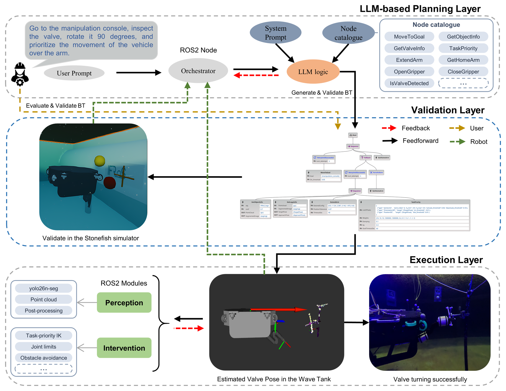
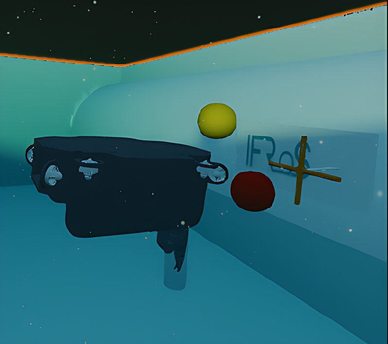
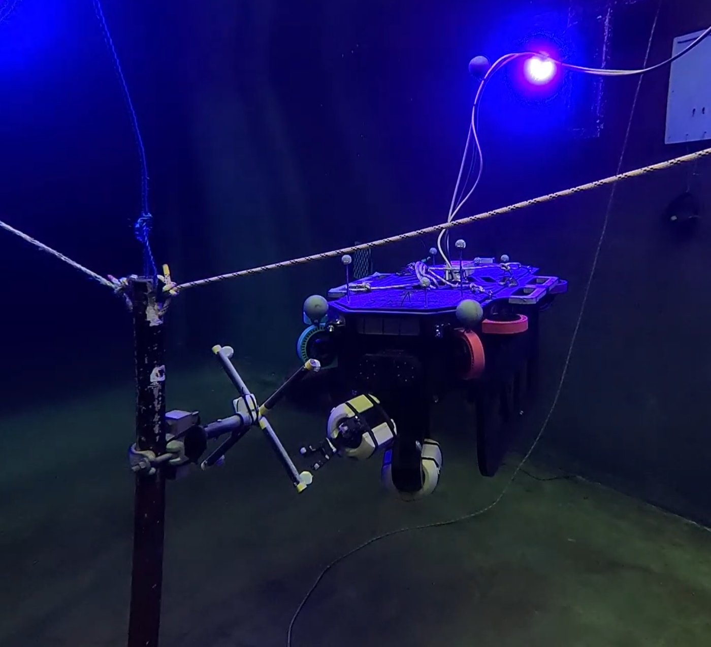

Autonomous underwater intervention requires robots that turn high-level mission intent into physically safe manipulation without human teleoperation, adapting both the mission plan and the way the controller executes it. Language-model planners can already adapt the mission plan at runtime, but the controller that carries it out still keeps a task hierarchy, gains, and weights fixed at design time. This paper presents a layered framework in which a large language model generates and re-plans behavior trees and simultaneously configures the task-priority control stack, including its active constraints, gains, joint weights, and damping, from perception context. The framework is evaluated on touching, grasping, and valve-rotation tasks in simulation and on a physical underwater vehicle-manipulator platform in a wave tank. A 50-scenario benchmark of language models shows DeepSeek V3 leading at 84% behavior-tree validity, while the local models Llama-3.1-8B and Qwen-2.5-7B reach 76% and 74% on a single RTX 3070 graphics card without cloud access. An ablation over 47 simulation trials shows that re-planning and adaptive weighting together raise task success from 71% to 90%. All 27 wave-tank trials succeeded with no parameter re-tuning.



Figure 2. Left: the valve-turning scenario in the Stonefish simulator (47 trials). Right: the physical underwater vehicle-manipulator system in the Ocean Systems Laboratory wave tank at Heriot-Watt University (27 trials).
Valve rotation in Stonefish: the valve pose is estimated from the stereo point cloud (RViz, centre), and the arm grasps the valve and turns it.
Obstacle avoidance: the end-effector is deflected around two obstacles on its way to the goal, with the live trajectory shown on the right.
Joint-limit avoidance during valve rotation: the task activates as the joint nears its limit and pushes it back into the safe range.
Full run in the wave tank: the operator types the mission, the LLM generates the behavior tree, and the robot detects the valve, approaches it, and turns it.
External view of the intervention in the wave tank: the arm reaches the valve and turns it.
Valve detection and segmentation in the wave tank.
@article{tran2026natural,
author = {Tran, Thi and Vahidibejestani, Amir and Grimaldi, Michele and
Kelasidi, Eleni and Ferreira, Fausto and Carlucho, Ignacio},
title = {From Natural Language to Underwater Manipulation Through
{LLM}-Driven Mission Planning and Adaptive Task-Priority Control},
journal = {IEEE Journal of Oceanic Engineering},
year = {2026},
note = {Under review}
}